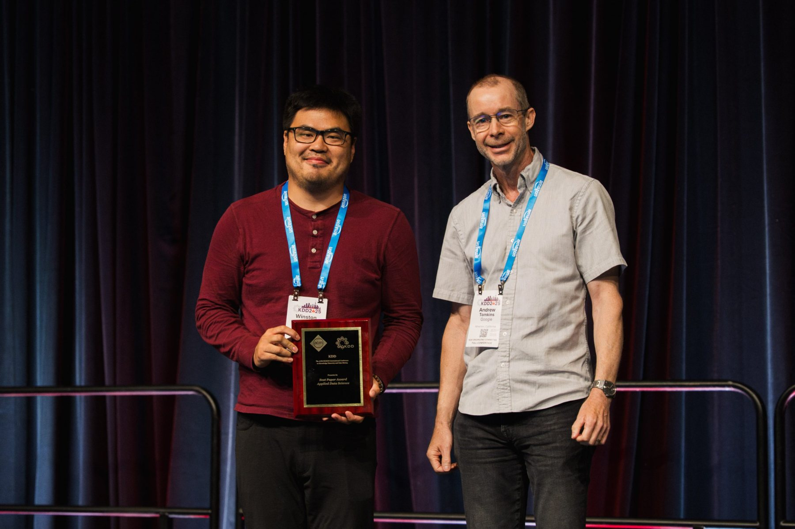

Causal machine learning, digital experimentation, and AI for data science.
I'm a Staff Research Scientist at Netflix. I develop statistical methods and production systems for causal inference and learning from many experiments.

Accepting the Best Paper Award at KDD '25 - a real career highlight.
About Me
I enjoy working on cross-functional teams and intersectional problems. I am proud to have delivered business impact while also making scholarly contributions to major conferences and journals in data science, political science, sociology, and economics.
Before joining Netflix, I was a Staff Data Scientist at Apple, where I helped build Siri's A/B testing platform, and a Research Scientist at Facebook, where I worked on missing data problems in ads measurement.
I received my PhD in political science from Princeton University, where I was fortunate to be advised by Rafaela Dancygier and Kosuke Imai. I studied voting decisions and survey methodology and wrote a dissertation on electoral politics and voter choice in Europe.
My wife, Katherine McCabe, teaches American politics and data science at Rutgers University.
Highlights
-
AI for data science
A human-augmenting agentic workflow for observational causal inference. See our Netflix Tech Blog post and open-source Python package.
-
Evaluating decision rules for A/B tests
A method to find better rules for choosing winners in A/B tests. This paper received the KDD '25 Best Paper Award in Applied Data Science.
-
Proxy metrics and north stars
Methods for learning precise proxy metrics for noisy north-star outcomes and blending them together.
-
Representative causal effects
A doubly robust framework for learning causal effects that generalize.
Working Papers
- Koch, Benedikt, Winston Chou, Aurélien Bibaut, and Nathan Kallus. "Policy learning with weak signals."
- Lan, Hui, Nathan Kallus, and Winston Chou. "Treatment effect modification by latent classes."
- Aridor, Guy, Winston Chou, Nathan Kallus, Antoine Scheid, Allen Tran, and Kevin Zielnicki. "Recommendation quality and the concentration of consumption: Experimental evidence from Netflix."
- Sigerson, Leif, Tom Cunningham, Winston Chou, Sana Pandey, Jonathan Stray, Lo-Hua Yuan, Eytan Bakshy, Timothy Chan, Molly Davies, Maria Dimakopoulou, Simon Ejdemyr, Kenneth Hung, Nathan Kallus, Madhav Kumar, Thu Le, A. Demetri Pananos, Lee Richardson, Brennan Schaffner, Rose Tan, Martin Tingley, Nadia Tomova, Panagiotis Toulis, Wenjing Zheng, Zander Arnao, Dean Eckles. "Evaluating for the long term: Learnings from industry."
- Chou, Winston, Adrien Alexandre, Lars Olds, Yi Zhang, and Nathan Kallus. "A human-augmenting agentic workflow for observational causal inference."
Publications
- Zielnicki, Kevin, Guy Aridor, Aurélien Bibaut, Allen Tran, Winston Chou, and Nathan Kallus. "The value of personalized recommendations: Evidence from Netflix."
- Accepted to International Journal of Industrial Organization.
- To appear at ACM Conference on Economics and Computation (EC '26).
- Presented at National Bureau of Economic Research (NBER) Digital Economics and AI Meeting and NABE East Coast Tech Economists MeetUp.
- Lal, Apoorva and Winston Chou. 2026. "Estimating representative causal effects with double machine learning."
- To appear at European Conference on Machine Learning and Principles and Practice of Knowledge Discovery in Databases (ECML PKDD '26).
- Presented at 3rd Workshop on Causal Inference and Machine Learning in Practice at KDD '25.
- Chou, Winston. 2026. "Blending proxy metrics with a north star." To appear at ECML PKDD '26.
- Chou, Winston, Colin Gray, Nathan Kallus, Aurélien Bibaut, and Simon Ejdemyr. 2025. "Evaluating decision rules across many weak experiments." Proceedings of the 31st ACM SIGKDD Conference on Knowledge Discovery and Data Mining (KDD '25). Best Paper Award (Applied Data Science).
- Bibaut, Aurélien, Winston Chou, Simon Ejdemyr, and Nathan Kallus. 2024. "Learning the covariance of treatment effects across many weak experiments." Proceedings of the 30th ACM SIGKDD Conference on Knowledge Discovery and Data Mining (KDD '24).
- Chou, Winston. 2021. "Randomized controlled trials without data retention." Presented at Conference on Digital Experimentation (CODE@MIT).
- Chou, Winston and Rafaela Dancygier. 2021. "Why parties displace their voters: Gentrification, coalitional change, and the demise of public housing." American Political Science Review. A nice blog post on this paper.
- Chou, Winston, Rafaela Dancygier, Naoki Egami, and Amaney Jamal. 2021. "Competing for loyalists? How party positioning affects populist radical right voting." Comparative Political Studies. Covered by the Monkey Cage blog and CNN.
- Chou, Winston, Kosuke Imai, and Bryn Rosenfeld. 2020. "Sensitive survey questions with auxiliary information." Sociological Methods & Research.
- Blair, Graeme, Winston Chou, and Kosuke Imai. 2019. "List experiments with measurement error." Political Analysis.
- Chou, Winston. 2017. "Culture remains elusive: On the identification of cultural effects with instrumental variables." American Sociological Review.
- Chou, Winston. 2016. "Seen like a state: How illegitimacy shapes terrorism designation." Social Forces.
Experience
- Netflix, Staff Research Scientist, 2022 - Present. Causal inference, experimentation, and personalization.
- Apple, Staff Data Scientist, 2020 - 2022. Founding data scientist on the experimentation platform for Siri.
- Meta (Facebook), Research Scientist, 2018 - 2020. Advertising measurement and causal inference with missing data.